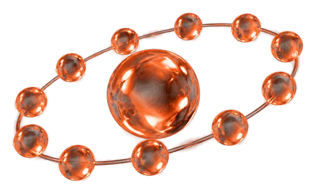
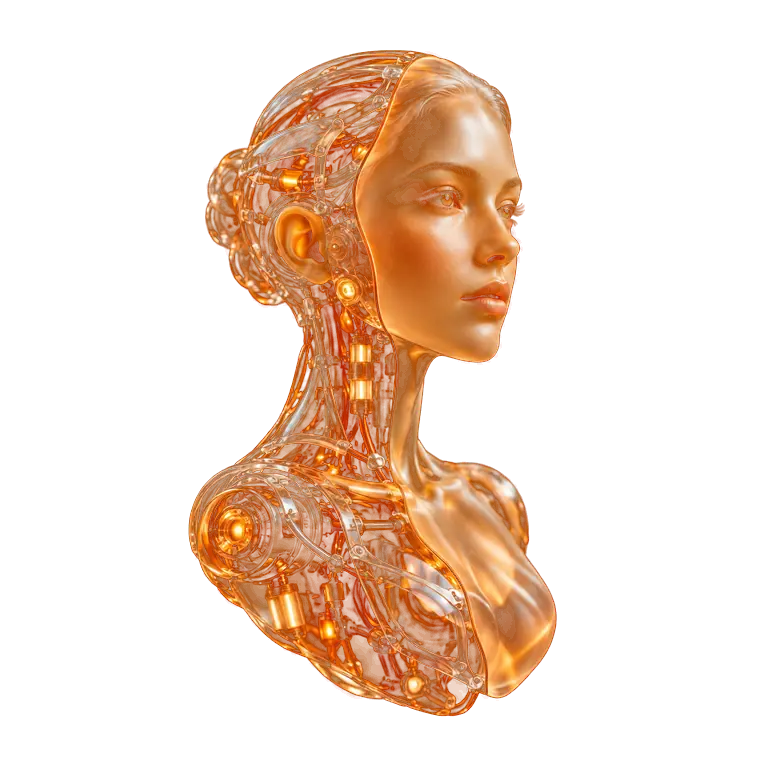
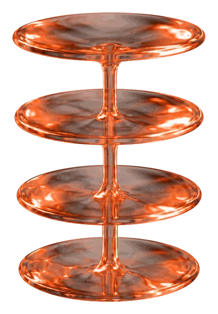

Мгновенный
ответ
Клиент не ждёт, менеджер не отвлекается.
Виртуальные сотрудники берут на себя продажи, поддержку и рутину. Вашей команде остаётся результат.
Обсудить задачуКлиент не ждёт, менеджер не отвлекается.
Ночью, в выходные и в праздники. Без смен и больничных.

Мультиязычность для клиентов из любой страны.
И не выгорает от однотипных вопросов.
Всегда вежлив и соблюдает корпоративный стиль.
Мессенджеры, e-mail, web и голос в одном сотруднике.
Условная схема типового процесса14 шагов
Виртуальный сотрудник
Клиент говорит с вежливым собеседником. Вы получаете участника процесса с чётким кругом задач, который работает автономно.

От одного ИИ-сотрудника до кластера виртуальных отделов.
Инициирует коммуникацию, работает по холодной базе и реанимирует «спящих» клиентов.
ПодробнееЛиды в мессенджерах и почте, персональные предложения. Включён в реестр российского ПО.
ПодробнееМгновенно отвечает, доступен 24/7, всегда вежлив и эмоционально устойчив.
ПодробнееГолосовые решения, омниканальность и мультиязычность в одном контуре.
ПодробнееРаботает с голосом и текстом, резюмирует информацию, управляет календарём, знает 100+ языков.
Подробнее
Внутрикорпоративный контур: self-service для персонала, мониторинг, инсайты и прогнозы.
ПодробнееСоздадим персонального агента под ваши требования. Ещё в штате: маркетолог, HR, коуч и аналитик данных.
Информация о стоимости составляет коммерческую тайну и не может быть опубликована.
ИИ точно выявляет потребности клиентов, персонализирует предложения в реальном времени и оптимизирует весь путь клиента: от привлечения до повторных продаж.
ИИ прогнозирует поведение аудитории, выявляет скрытые паттерны и адаптирует коммуникации в реальном времени. Выше релевантность, ниже затраты.
Автоматизирует процессы, снижает издержки, ускоряет привлечение и управление рисками. Даёт поддержку 24/7 и рост выручки за счёт клиентского опыта.
Снижает издержки через предиктивное управление и профилактику инцидентов. Клиентский опыт лучше, отток ниже, жизненный цикл клиента длиннее.
Полная автоматизация взаимодействия с клиентом: персональные предложения, динамическое ценообразование, управление заказами, оплатой и логистикой.
ИИ трансформирует бизнес-модели от логистики до энергетики: оптимизация, рост прибыли и поиск новых точек роста.
3,7×
В среднем приносят инвестиции в ИИ на каждый вложенный рубль
73%
лидеров уже используют ИИ для оптимизации, роста прибыли и поиска точек роста
24/7
на связи, без смен и пауз
100+
языков у ИИ-ассистента
Агент выступает полноценным участником процесса: с чётким кругом задач и в автономном режиме.
Мессенджеры, e-mail, web и платформы, голосовые решения
Контекстный инжиниринг, RAG, базы данных и API
Аналитика и данные, бизнес-решения, интеграции через API и MCP
Агента под конкретные задачи, с учётом специфики отрасли и ваших процессов.
В существующие системы и рабочие процессы, чтобы решения принимались быстрее.
Постоянный мониторинг агентов, консультации и оперативное устранение сбоев.
Глубокая автоматизация: прогнозирование сценариев и персонализация.
Включено в Реестр российского ПО. Виртуальный отдел продаж, запись № 32900 от 31.03.2026
О продуктеЭто рабочий персонал на базе искусственного интеллекта, оснащённый интеллектуальными инструментами. ИИ-агенты работают совместно в мультиагентной системе для автономного решения сложных задач.
Интеллектуальные системы, которые самостоятельно принимают решения и выполняют бизнес-задачи без постоянного участия человека. В отличие от роботизированной автоматизации (RPA), агент адаптируется, работает в условиях неопределённости и реагирует на изменения в реальном времени. Например, ИИ-продавец сам ведёт переговоры, адаптирует предложения и управляет воронкой продаж.
В проактивности и способности к обучению. RPA и чат-боты реагируют на запросы по жёстким сценариям, а ИИ-агент сам инициирует взаимодействие и непрерывно учится на реальных диалогах. Он способен вести сложные нелинейные переговоры и выступает автономным бизнес-юнитом.
Опишите, что сейчас занимает больше всего времени. Покажем, какие шаги можно отдать виртуальному сотруднику.
Демо-макет
Это демонстрационный макет: пока готова только главная страница. Остальные разделы появятся после утверждения концепции.